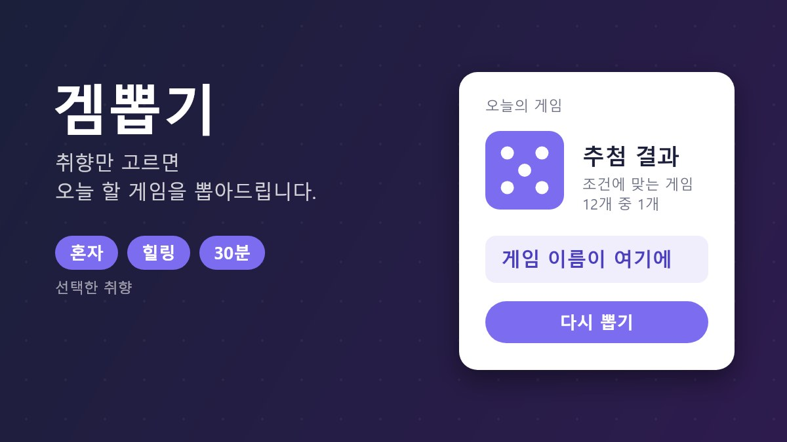

서비스 소개
뭐 할지 고르다 시간만 보내는 게이머를 위해
게임은 많은데 뭘 할지 못 정해서 라이브러리만 뒤지다 끄는 날이 많습니다.
겜뽑기는 장르·분위기·플레이 시간 같은 취향 몇 가지만 고르면 조건에 맞는 게임 중 하나를 추첨해서 바로 정해줍니다.

주요 기능
취향 고르기
장르·인원·분위기·플레이 시간 키워드를 쉼표로 이어 입력하면 키워드가 모두 들어간 게임만 후보로 남깁니다.
- 인원: 혼자 · 함께
- 분위기: 힐링 · 경쟁 · 긴장 · 도전 · 몰입 · 탐험 · 유머 · 감동
- 시간: 짧게 · 보통 · 길게
- 장르: RPG · FPS · 시뮬레이션 · 협동 등
랜덤 뽑기
남은 후보 중 하나를 무작위로 추첨해 오늘 할 게임을 고민 없이 정해줍니다.
결과가 마음에 들지 않으면 다시 뽑기를 누르고, 뽑기 설정에서 전체 게임에서 뽑기를 선택하면 취향과 상관없이 전체 목록에서 뽑습니다.
뽑은 게임 기록
뽑았던 게임과 평가를 남겨 다음 추천에 반영하는 기능입니다.
현재는 준비 중이며, 지금은 뽑기 결과를 화면에서 바로 확인할 수 있습니다.
이용 방법
- 오늘 하고 싶은 게임의 취향(장르·분위기·플레이 시간)을 고릅니다.
- 게임 뽑기 버튼을 눌러 추첨된 게임을 확인합니다.
- 마음에 들면 바로 플레이하고, 아니면 다시 뽑습니다.
뽑기 설정
화면 테마
밤에 게임을 고를 때는 어두운 화면으로 바꿀 수 있습니다.
플레이어 정보
0 / 10
뽑기 범위
입력한 취향 키워드가 모두 들어간 게임 중에서 뽑습니다.
게임 뽑기
취향 키워드를 입력하고 버튼을 누르면 입력한 키워드가 모두 들어간 게임 중 하나를 뽑아드립니다.
취향 키워드를 입력한 뒤 게임을 뽑아 주세요.